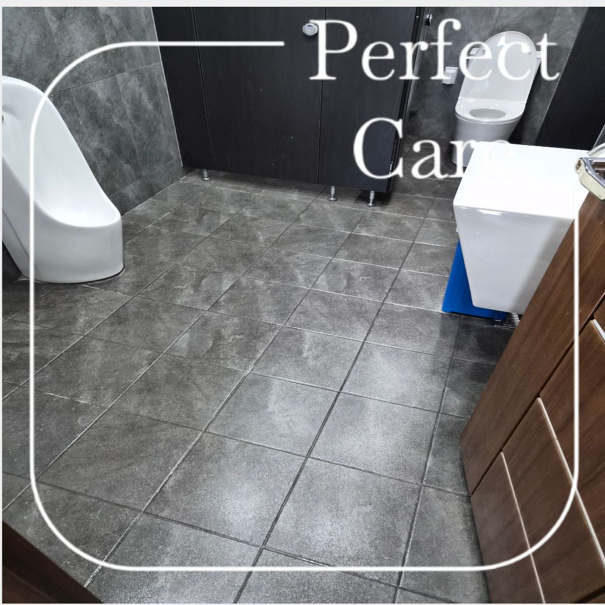
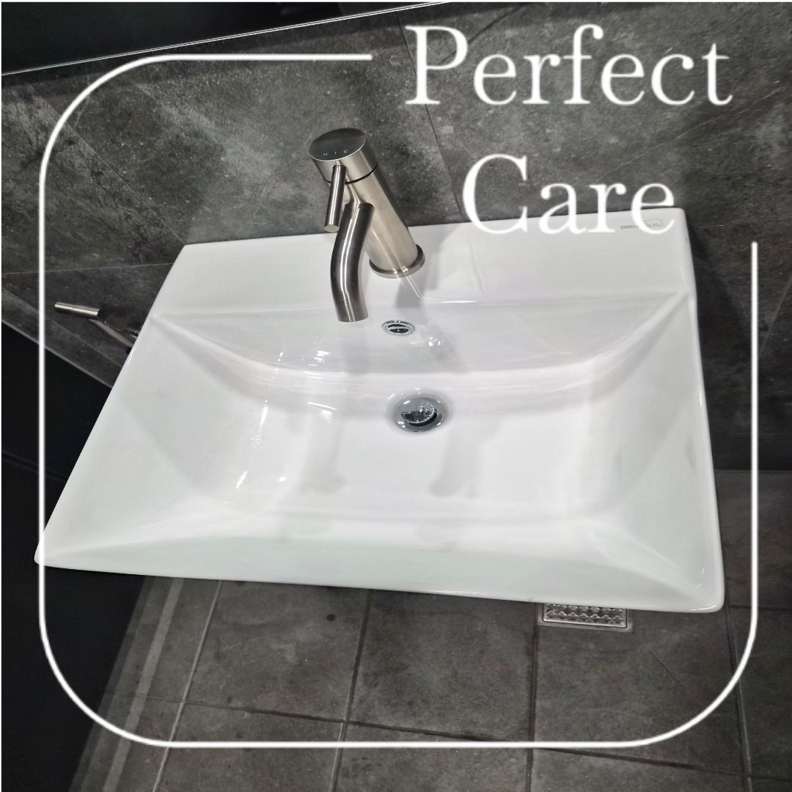
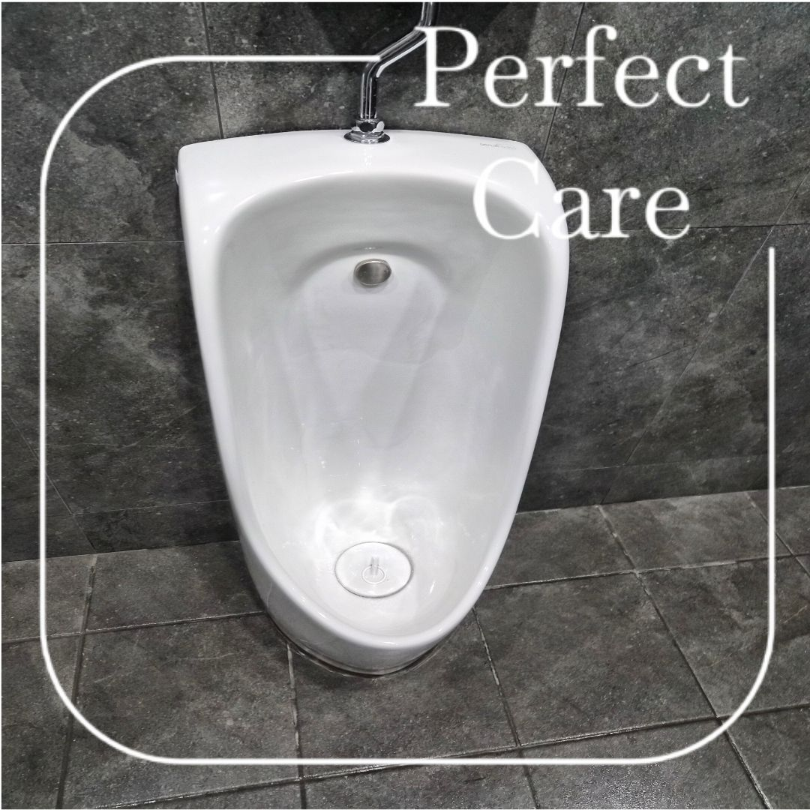
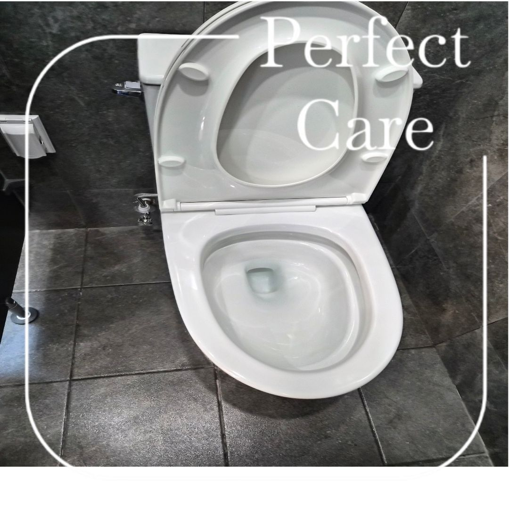
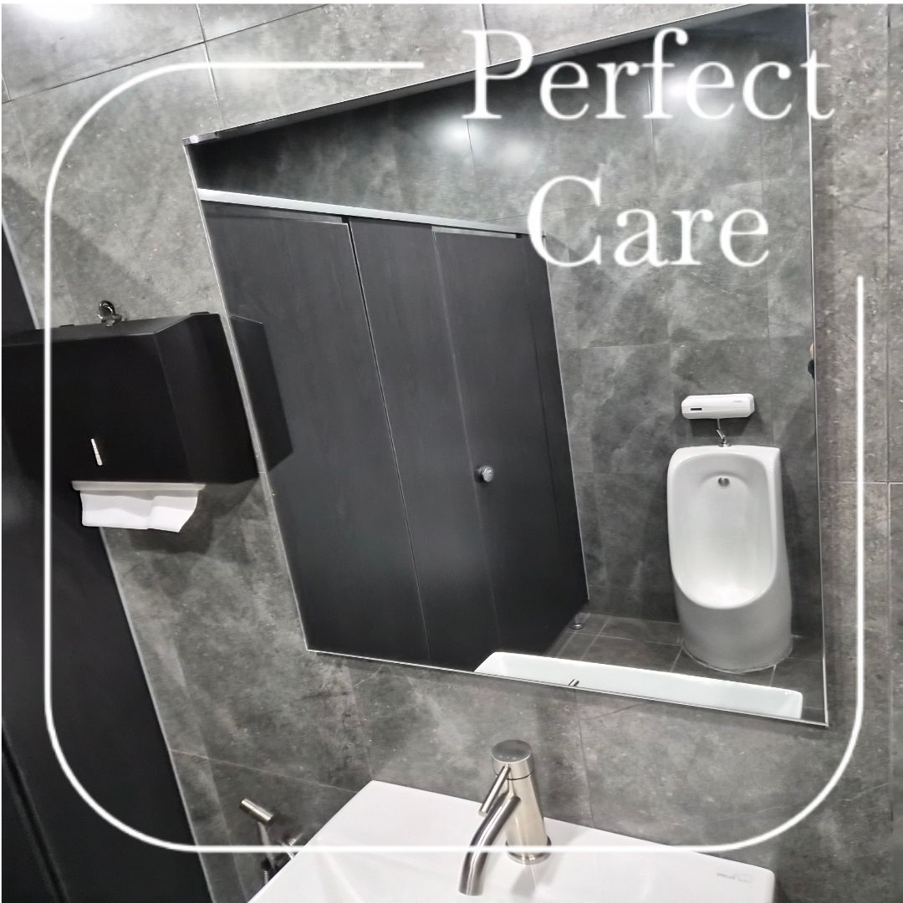

김해 대동산단 기업체 화장실 정기관리
사업장 화장실은 이용량이 많아 바닥, 변기, 소변기, 세면대처럼 물 사용이 잦은 공간에 오염이 반복됩니다. 김해 화장실 정기청소는 한 번 강하게 청소하는 것보다 일정한 주기로 상태를 유지하는 관리가 중요합니다.
아래 사진은 김해 대동산단 기업체 정기청소 현장에서 관리한 화장실 일부입니다.

화장실 주요 관리공간



바닥과 위생기기를 함께 관리해야 냄새와 오염 누적을 줄일 수 있습니다
변기나 세면대만 깨끗해 보여도 바닥 줄눈, 모서리, 소변기 주변에 오염이 남으면 전체적인 화장실 상태가 금방 나빠질 수 있습니다. 정기관리에서는 눈에 잘 보이는 위생기기뿐 아니라 물때가 남는 바닥과 코너를 함께 확인합니다.
현장 이용량과 화장실 수에 따라 주 1회부터 주 6회까지 관리주기를 상담합니다.

김해 화장실 정기청소 상담 시 확인하는 항목
화장실 개수, 변기와 소변기 수, 세면대 수, 직원과 방문객 이용량, 운영시간, 바닥 오염 정도, 사무실이나 계단과 함께 관리할 공간이 있는지를 확인합니다. 정확한 견적은 무료 방문견적으로 안내합니다.
변기
소변기
세면대
바닥·배수구
김해 화장실 정기청소 무료 방문견적
화장실 수와 이용량, 사무실·계단 포함 여부를 현장에서 확인한 뒤 관리주기를 안내드립니다.